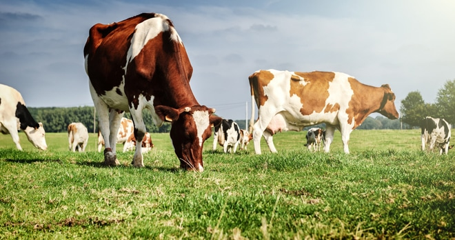

Modern Dairy Dashboard
Keep your dairy operations running smoothly with a clean, responsive admin portal built for collecting milk, tracking fat and SNF, billing farmers, and generating printable receipts.

Store farmer profiles, contact details, and collection history in one place.
Record cow and buffalo milk separately with accurate quantity and quality data.
Generate invoices quickly and create printable receipts for every farmer.
Monitor daily collections, payment status, and farmer performance at a glance.
Our system brings modern UX to traditional dairy workflows. It is optimized for fast data entry, better transparency, and mobile-friendly access.
A modern UI for dairy operations that feels fast, polished, and easy to use.